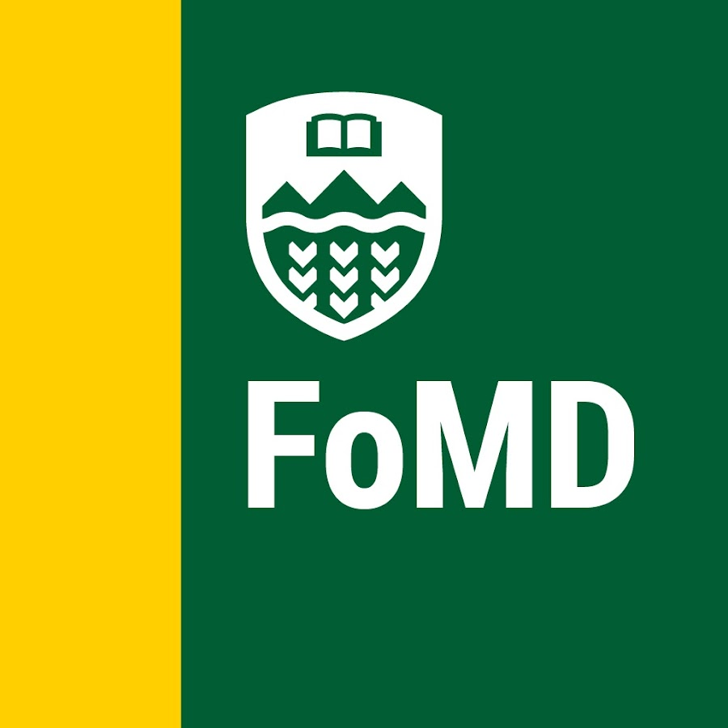

Curriculum Vitae
Education
BSc. (Hons) Computing Science
Focusing on machine learning and artificial intelligence. Research areas include deep learning, natural language processing, and computer vision.
Experience
Research Assistant - Data Analysis & Modeling
• Implemented modular OOP design while scraping historical weightlifting performance
data using Selenium and BeautifulSoup from
national-level websites to create performance modeling.
• Converted 100+ PDFs to CSV by developing automation script using
Camelot and pdfplumber followed by extensive data
cleaning and validation of 25000+ records using pandas
and Excel, addressing OCR errors, visual markup inconsistencies, and
missing data.
• Collaborated with another student to support the development of statistical
and ML models to analyze trends and performance outcomes in elite
weightlifting populations.

Machine Learning and Data Analysis Research Assistant
• Analyzing intraoperative cardiac arrest cases by aligning and
extracting patterns from physiological and medication data around arrest events.
• Developing time-series clustering workflows using DTW and
tslearn, performing advanced preprocessing with
pandas, and visualizing trends using matplotlib (e.g.,
spaghetti plots, heatmaps).
• Optimized distributed batch processing on HPC clusters using Bash
automation and parallelized Python jobs, reducing run time.
Information Technology Intern
• Enhanced the Career Counseling Department's online presence by designing and testing a
website using the Wix web builder that increased engagement and
viewership by 30%.
• Provided end-user support by troubleshooting devices connected to the Internet through
RUCKUS® Cloudpath, ensuring seamless network access for students on
campus.
Skills
Languages and Frameworks
Python, C, HTML, SQL, Reflex, OOP, DSA, FastAPI
Libraries
Scikit-learn, Librosa, sqlite3, pandas, NumPy, Camelot, pdfplumber, Matplotlib, LangChain, Ollama, Selenium, BeautifulSoup, HuggingFace TRL, HuggingFace, PyAudio
Areas of Expertise
Machine Learning, Data Analysis, Web Scraping, Natural Language Processing, Time-Series Analysis, Data Cleaning & Validation, HPC Computing